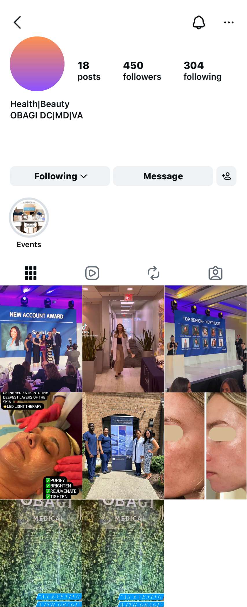
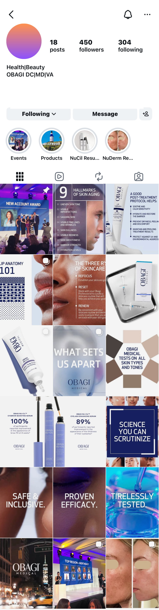

The original Instagram feed before the visual redesign.

The updated Instagram feed following the visual redesign.
A sales representative for Obagi Medical, a leading professional pharmaceutical skincare company, approached me to redesign her sales-focused Instagram account. The goal was to create a feed that felt more modern, polished, and cohesive while clearly communicating the Obagi brand and presenting product information in a professional, engaging way.
The project involved refining the account’s overall visual identity through detailed image editing, improved layout consistency, and the creation of new branded content. The before-and-after comparison shown here highlights how the redesign transformed the feed into a more organized, visually appealing, and comprehensive platform for supporting sales and customer engagement.